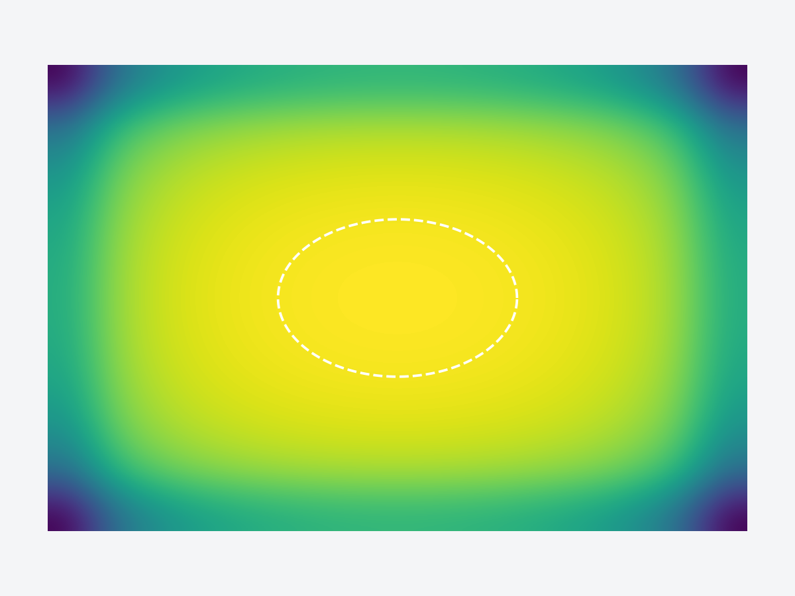
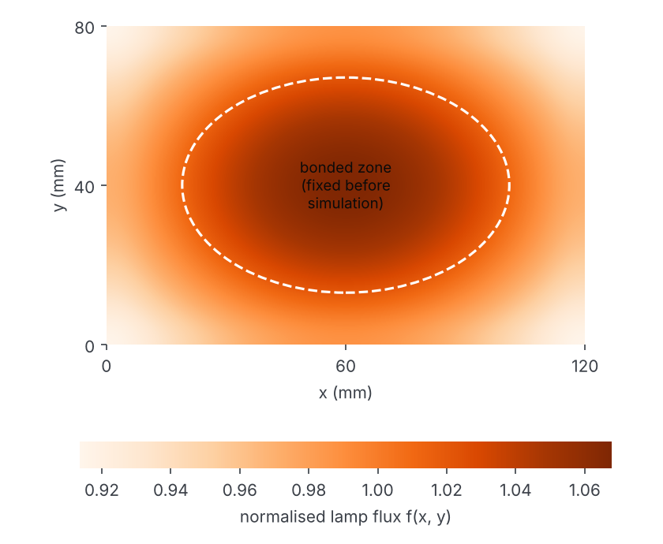
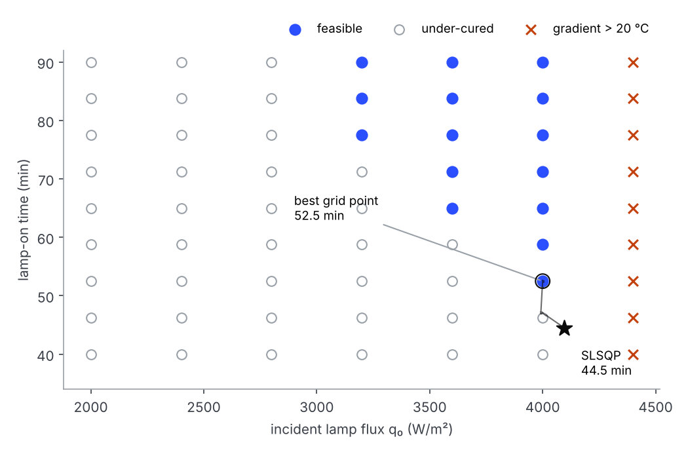
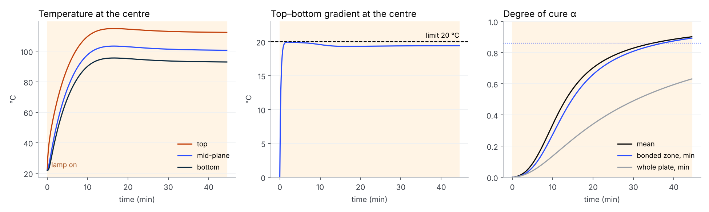
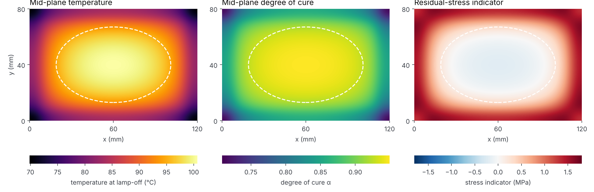

On the G700 nacelle line, a shimming compound needed about 8 hours to cure, and the methods team was looking at a radiant lamp to speed it up. Back home, I wrote the physics in Python to see how fast a lamp can cure a bonded patch without overheating it.

Reaching a set temperature is not the same as curing. A point can get hot and still be under-cured if it stays hot too briefly, and the surface can overheat while the bottom lags. So the model follows both fields — temperature T and degree of cure α — everywhere in the plate, and lets them feed each other.
Explicit finite differences on a 16 × 12 × 6 grid. An explicit scheme blows up if the time step is too long, so I derived the 3D limit and stayed under it: Δt = 1.8 s against 2.39 s.
The bonded zone — a 82 × 54 mm ellipse in the centre — is written into the code before any run, so the success criterion cannot be bent to fit the result. That was the main criticism of v1.

Two knobs: lamp flux q₀ and lamp-on time. The goal is the shortest cycle, with small penalties on energy and on the stress indicator, under four limits: mean cure ≥ 0.90, cure in the bonded zone ≥ 0.86, peak ≤ 130 °C, top–bottom gradient ≤ 20 °C.
A 63-point grid maps the feasible window; SLSQP then starts from the best grid point and slides along its edge. In 16 iterations it cuts the cycle from 52.5 to 44.5 min and the absorbed energy from 9,072 to 7,871 kJ/m².

The top heats first; the gradient hits 20 °C within two minutes and stays pinned there for the whole cycle, while the peak never gets close to 130 °C. Pushing harder would not overheat the part — it would split it into a hot skin and a cold core.

The bonded zone ends at 0.893, the coldest corner at 0.631. The lamp is only slightly weaker there; the corners lose heat through two side faces as well. This is why the criterion is the zone that is actually bonded, not the whole plate — and why I fixed that zone before running anything.

The same cycle on three meshes. Peak temperature and mean cure barely move. The corner minimum keeps dropping as the mesh gets finer — another reason not to judge the cure on the corners.
| Mesh | Δt | Tmax | ᾱ | α zone min | α corner |
|---|---|---|---|---|---|
| 12 × 8 × 5 | 2.6 s | 115.0 °C | 0.900 | 0.899 | 0.661 |
| 16 × 12 × 6 | 1.8 s | 114.9 °C | 0.902 | 0.893 | 0.631 |
| 20 × 14 × 7 | 1.0 s | 114.9 °C | 0.903 | 0.898 | 0.620 |
The bonded-zone minimum is not monotonic (0.899 → 0.893 → 0.898); it stays above target, but a finer study would be needed for a formal error estimate.
Every parameter is synthetic and non-confidential: no Safran geometry, material card or process data is in the model. The kinetics are not fitted to the real compound, so the minutes are illustrative; what transfers is the reasoning.
A set-point does not qualify a cure; the local thermal history does. And the limit I expected — temperature — was not the one that mattered.
Optimize a power profile q₀(t) instead of a constant flux: ramp hard, then back off as the gradient builds.
Add a sensitivity study on the kinetic parameters.
Calibrate against a thermocouple test.